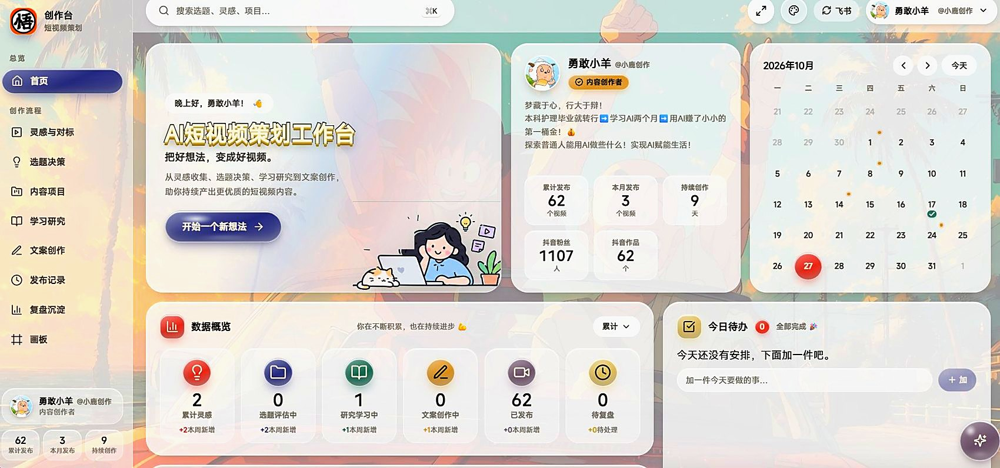
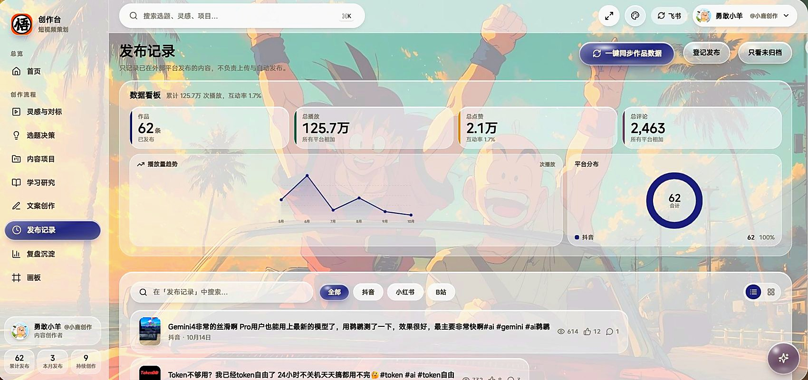
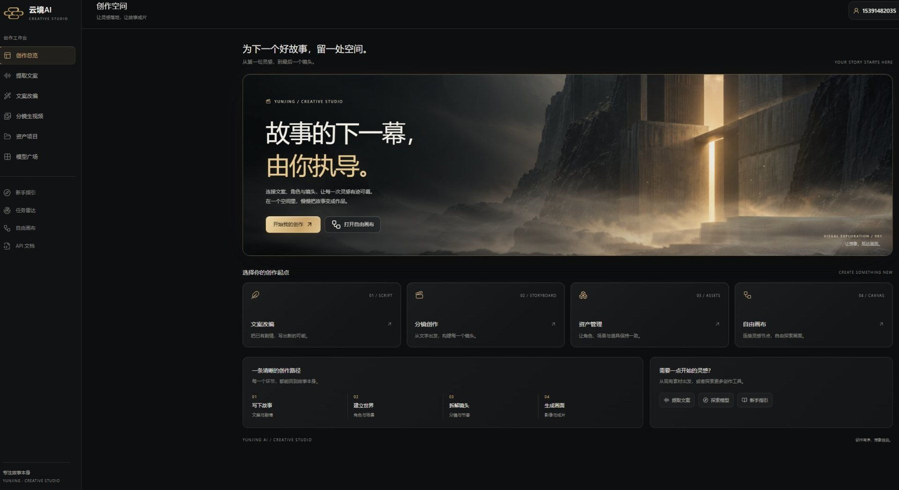

SKILLS
技能工具
会用的工具列在下面，更重要的是知道什么时候该用哪个。
工具只是手
判断才是脑子
技能地图
内容创作
- 选题策划
- 脚本创作
- 手机拍摄
- 剪映成片
- 数据复盘
AI 工具
- Codex
- Claude
- WorkBuddy
- Vidu
- 豆包 Seedance
办公与协同
- Excel
- WPS
- 飞书
- 石墨文档
熟练
选题策划 · 脚本创作 · 视频剪辑 · 数据复盘
实践过
Vidu · 豆包 Seedance · Ozon 后台
WORKBENCH
自己搭的工作台
工具不是目的，但把流程做成工具以后，一天能省下的时间是真的。


